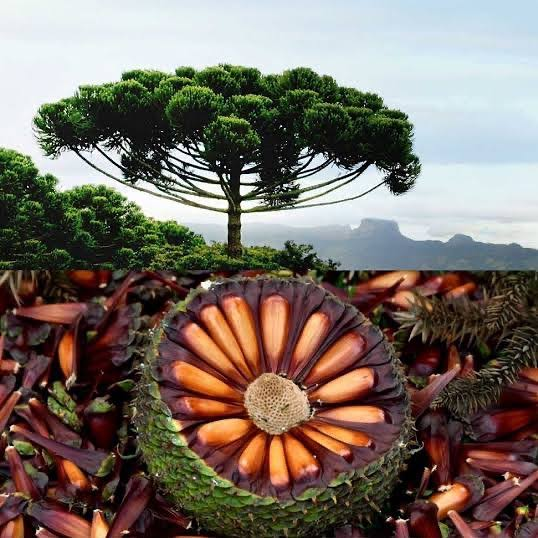
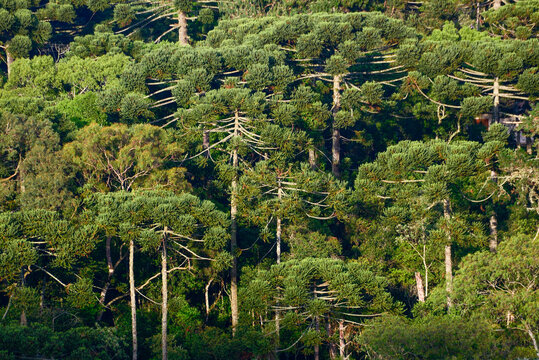
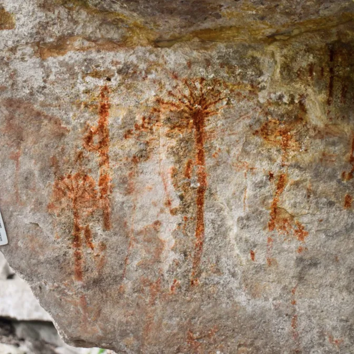

Símbolo do Paraná: Conheça a Araucária
A Araucaria angustifolia, popularmente conhecida como araucária ou pinheiro-do-paraná, é a árvore símbolo do Estado do Paraná e uma das coníferas mais imponentes da América do Sul. Caracterizada por sua copa em formato de taça e por galhos dispostos em espirais, a espécie desempenha um papel ecológico fundamental ao fornecer alimento para diversas espécies da fauna nativa, como a gralha-azul e o ouriço. Proteger a araucária é essencial para a conservação da biodiversidade paranaense e para a preservação do ecossistema da Floresta de Araucárias.

As Matas de Araucárias e sua História no Paraná
Historicamente, a Floresta Ombrófila Mista cobria grande parte do território do Paraná e dos estados do Sul do Brasil, adaptada ao clima temperado e às altitudes do planalto. A exploração intensa da madeira ao longo do século XX, impulsionada pelo desenvolvimento econômico e pela expansão urbana e agrícola, reduziu drasticamente a cobertura original dessa floresta. Hoje, as matas de araucárias remanescentes são protegidas por leis ambientais rigorosas e por iniciativas de reflorestamento que buscam reverter o risco de extinção da espécie e preservar a história natural paranaense.

A Araucária na Arte e na Identidade Paranaense
A araucária está profundamente enraizada na cultura e na identidade do povo paranaense, inspirando de obras artísticas a elementos arquitetônicos e símbolos oficiais. Suas formas geométricas marcantes e suas sementes — os pinhões — foram imortalizadas no movimento Paranista e na arte do mosaico de calçadas rústicas em Curitiba e outras cidades do estado. Além do aspecto visual e artístico, a tradição gastronômica de consumir o pinhão assado ou cozido nos meses frios de inverno reforça a forte ligação cultural e afetiva da população com a árvore.

Curiosidades
A Lenda da Gralha-Azul
A gralha-azul é considerada a principal semeadora natural da araucária. Segundo a lenda paranaense, a ave esconde os pinhões no solo para comer mais tarde e acaba esquecendo alguns deles, permitindo que novas árvores germinem e deem origem a novas florestas.
Sementes de uma Árvore Ancestral
A araucária é uma das plantas mais antigas do planeta, pertencente a uma família botânica que já existia na época dos dinossauros. Outro detalhe marcante é que a árvore pode levar mais de 20 anos para começar a produzir os primeiros pinhões.